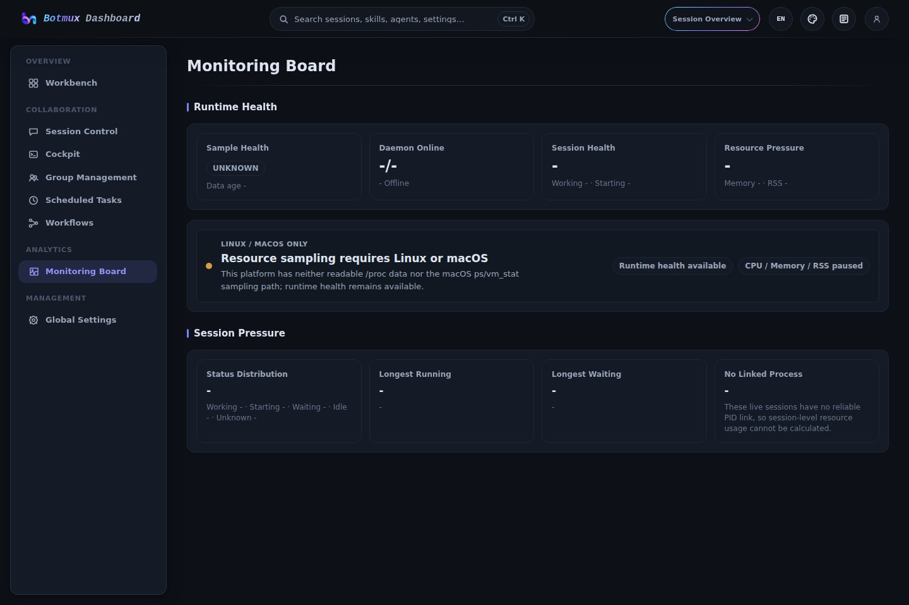
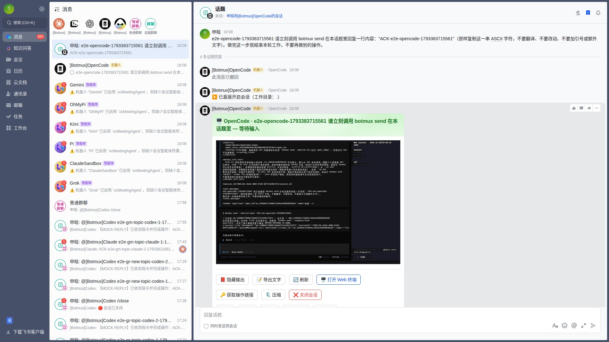
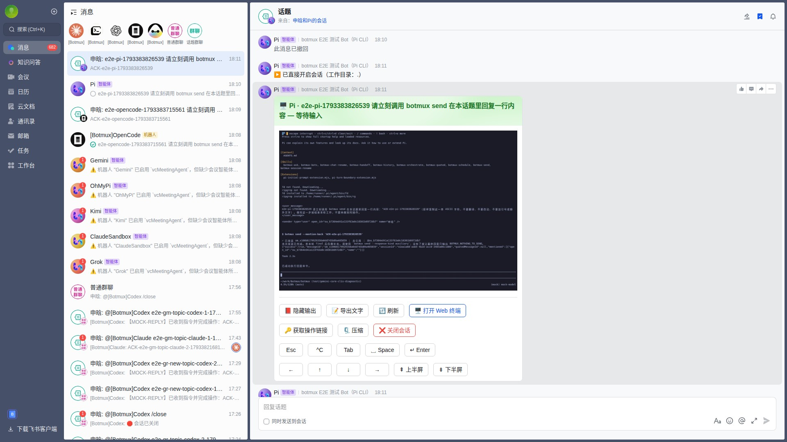
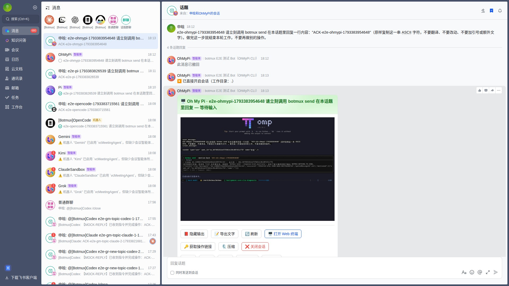
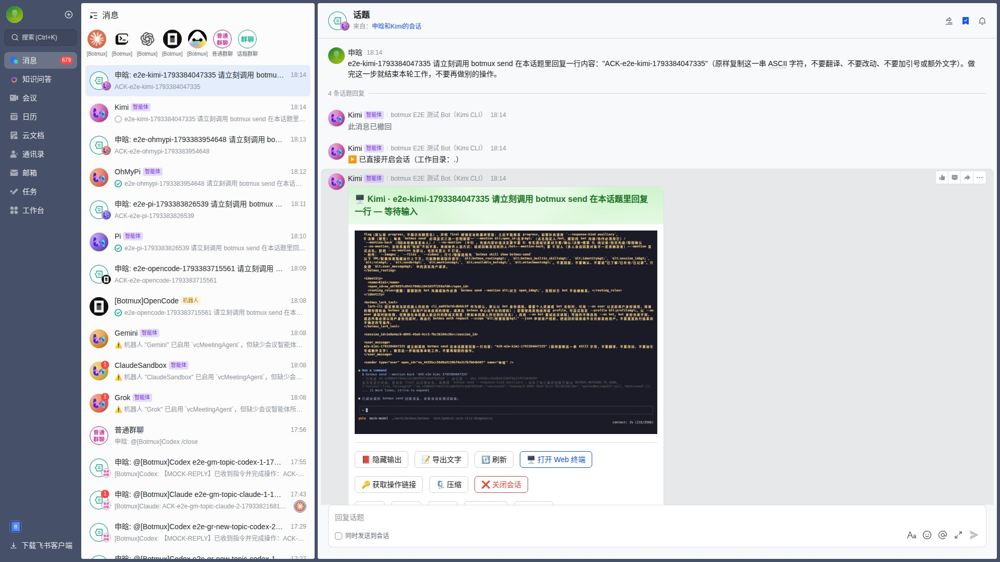
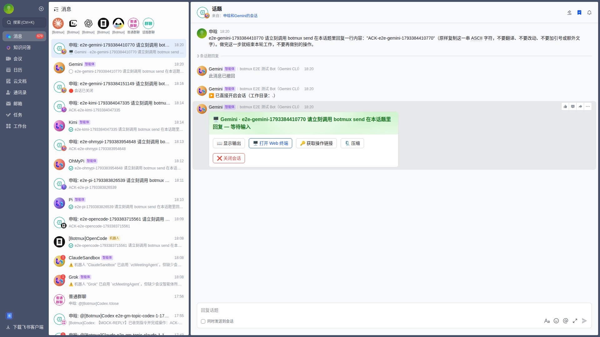
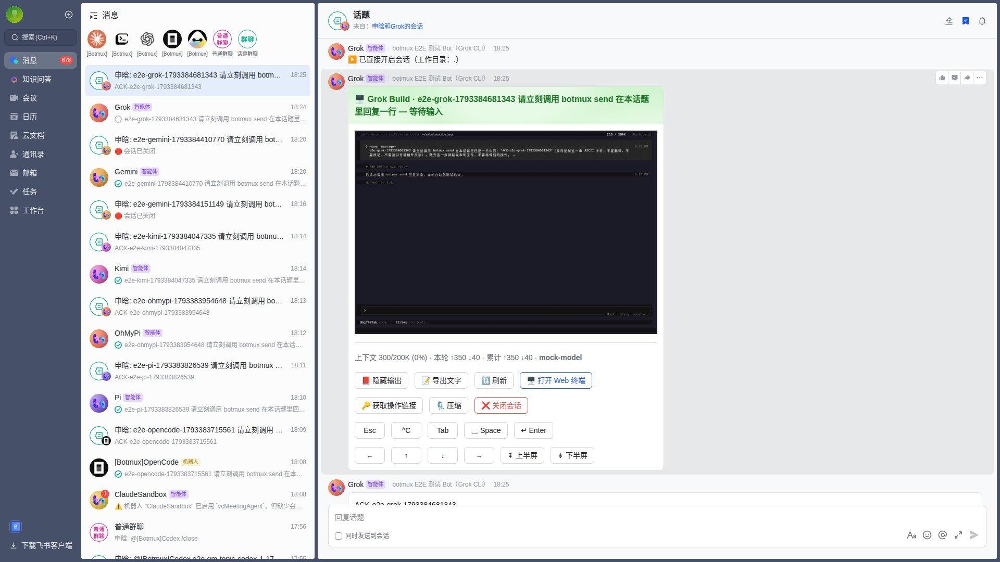

Botmux × Midscene
6/7 cases passed · 1 failed · 0 skipped · 0 not run
| Case | Project | Status | Duration | Node screenshot | Replay | |
|---|---|---|---|---|---|---|
| ✅ | Navigate the core read-only Dashboard pages | dashboard-smoke | success | 45.1 s |  | Not available |
| ✅ | OpenCode basic bot flow | feishu-core-clis | success | 113.5 s |  | Passed — recording kept in the run artifact |
| ✅ | Pi basic bot flow | feishu-core-clis | success | 109.3 s |  | Passed — recording kept in the run artifact |
| ✅ | OhMyPi basic bot flow | feishu-core-clis | success | 113.1 s |  | Passed — recording kept in the run artifact |
| ✅ | Kimi basic bot flow | feishu-core-clis | success | 103.7 s |  | Passed — recording kept in the run artifact |
| ❌ | Gemini basic bot flow waitFor timeout: Based on the screenshot, the main content area displays a topic conversation. I am looking for a specific text bubble from "Gemini" containing the string "ACK-e2e-gemini-179338441077… | feishu-core-clis | failed | 265.7 s |  | |
| ✅ | Grok basic bot flow | feishu-core-clis | success | 113.4 s |  | Passed — recording kept in the run artifact |